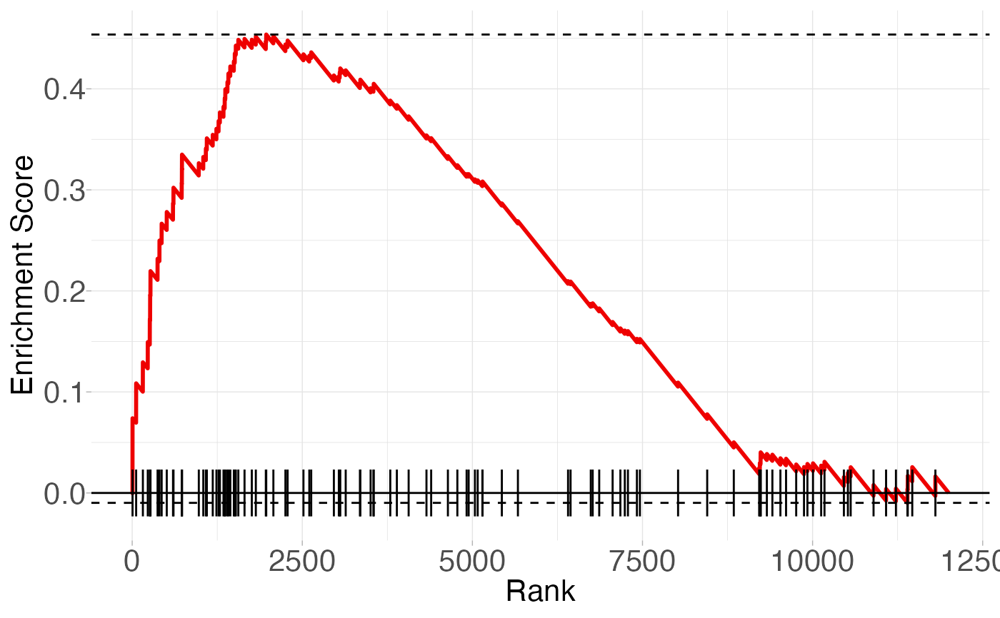
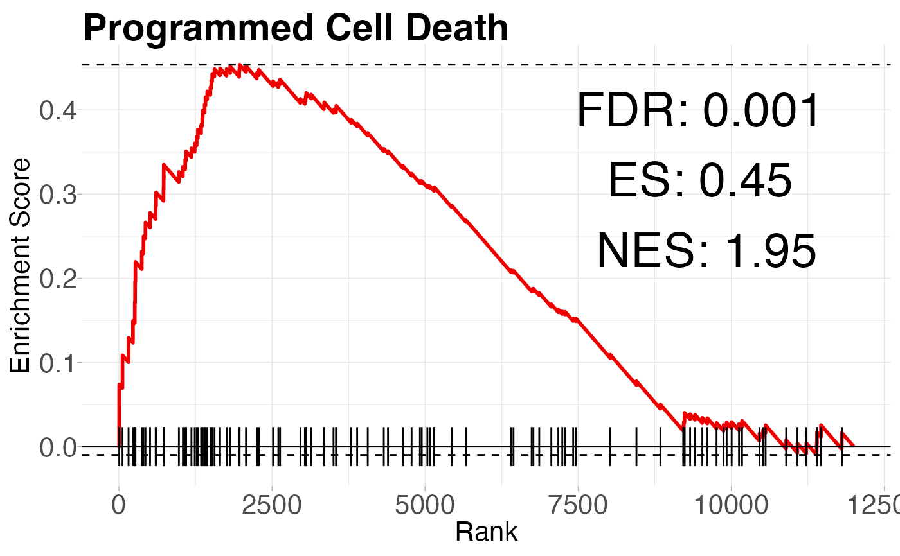

Drop-in replacement for fgsea::plotEnrichment() which allows more plot customization and annotation. The source code for this function was lifted from: https://github.com/alserglab/fgsea/blob/master/R/plot.R.
Usage
plot_enrichment(
pathway,
stats,
gseaParam = 1,
ticksSize = 0.5,
annotate = FALSE,
FDR = NULL,
ES = NULL,
NES = NULL,
tickAlpha = 1,
tickColor = "black",
lineWidth = 1,
lineColor = NULL,
lineAlpha = 1,
hlinesColor = "black",
hlinesType = 2,
anno_x_pos = 0.8,
anno_y_pos = 0.7,
anno_size = 10,
fdr_digits = 3,
es_digits = 2,
nes_digits = 2,
plotTitle = NULL,
xlab = "Rank",
ylab = "Enrichment Score"
)Arguments
- pathway
Gene set to plot
- stats
Gene-level statistics
- gseaParam
GSEA parameter
- ticksSize
size of the rank tick mark
- annotate
Should the supplied FDR, ES, and NES values be annotated on the plot? default (FALSE)
- FDR
numeric. manually supplied FDR value to be annotated on the plot if annotate=TRUE
- ES
numeric. manually supplied ES value to be annotated on the plot if annotate=TRUE
- NES
numeric. manually supplied NES value to be annotated on the plot if annotate=TRUE
- tickAlpha
alpha value of the rank tick marks
- tickColor
color of the rank tick marks
- lineWidth
width of the ES line
- lineColor
color = the ES line. "red2" or "blue2" if lineColor=NULL, depending on the max observed ES
- lineAlpha
alpha value of the ES line
- hlinesColor
color of the min/max horizontal ES lines
- hlinesType
linetype of the min/max horizontal ES lines
- anno_x_pos
if annotate=TRUE, relative x-position of the text annotation on the plot. default (0.8)
- anno_y_pos
if annotate=TRUE, relative y-position of the text annotation on the plot. default (0.8)
- anno_size
if annotate=TRUE, size of the text annotation
- fdr_digits
if annotate=TRUE, number of digits to round supplied FDR value by
- es_digits
if annotate=TRUE, number of digits to round supplied ES value by
- nes_digits
if annotate=TRUE, number of digits to round supplied NES value by
Examples
pathway <- fgsea::examplePathways[["5991130_Programmed_Cell_Death"]]
stats <- fgsea::exampleRanks
plot_enrichment(pathway, stats)

# Stat annotations can be added to the plot
fgsea_res <- fgsea::fgsea(fgsea::examplePathways, fgsea::exampleRanks)
cell_death <- fgsea_res[pathway == "5991130_Programmed_Cell_Death"]
plot_enrichment(
pathway,
stats,
annotate = TRUE,
FDR = cell_death[, padj],
ES = cell_death[, ES],
NES = cell_death[, NES],
plotTitle = "Programmed Cell Death"
)
